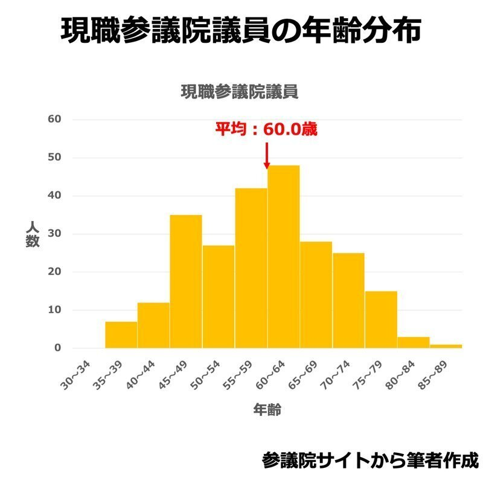
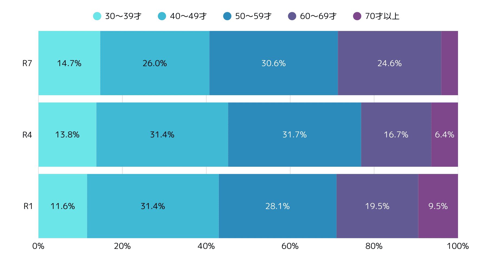
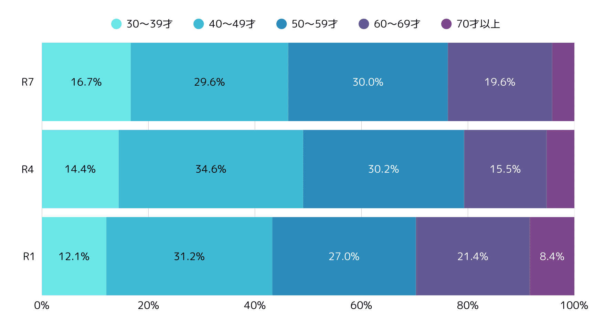
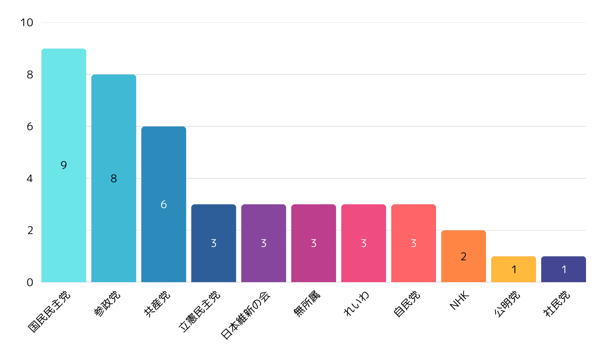

いよいよ夏に迫った参議院議員選挙。
これまで仕事でお世話になった人が出るなど個人的にも注目している選挙戦ですが、立候補者を見ていると、「あれ、結構若い人多くないか…？」という感覚を持っていました。
かつてPMIでは国会の年齢について詳しく分析した記事を執筆しましたが（以下参照）、もし立候補者の年齢分布に変化が生まれているのだとすると、それはそれで興味深いトレンド。
もちろん、若ければ若いほど良いというわけではないですし、立候補者が若いからといって当選者が若いとも限りませんが、若い人が果敢に選挙にチャレンジし、政治に参画していくことそのものは大切な兆候だと感じています。
https://note.com/pmi/n/n0b869fe97190
そこで、本記事では、過去２回の参議院選挙と今年夏に予定されている第27回参議院選挙の立候補者の年齢層を比較し、何か新たな動きが始まっているか分析をしたいと思います。
第25回（令和元年）、第26回（令和4年）の年齢別立候補者数については総務省HPから、今回第27回（令和7年）の年齢別立候補者数についてはまとまった統計データがまだ存在していないことから選挙ドットコムの特設サイトよりPMIが独自に集計した結果を利用しています。
なお、年齢に関する記載のない候補者については本集計では除外しています。
参議院議員の年齢分布
本題に入る前に、現在の参議院議員の年齢分布を確認しておきたいと思います。現役の議員のみなさんの年齢分布がわかった方が、立候補者の特徴が鮮明になると思われるからです。
…が、なんということでしょう。議員の年齢分布を確認できる統計がありませんでした。
データアナリストの渡邉秀成さんも指摘されていますが、「衆議院議員、参議院議員の各議員紹介部分内に文章の一部として議員の誕生年、経歴が一緒に含まれて」いるとのこと。頑張れば集計できなくはないですが、僕の今の技術とリソースでこれを統計データ化するのはちょっと厳しい…。
ということで、少し古いデータにはなりますが、ブロガーの増沢陸さんが令和４年7月時点での現職参議院議員の年齢分布を集計したグラフを公開されていらっしゃるので、そちらを今回は引用させていただこうと思います。

増沢陸「令和4年参議院選挙立候補者の年齢分布について」より引用
細かいデータはわかりませんが、おおむね50代〜60代がボリュームゾーンとなっており、70代の現職参議院議員も一定の割合でいるものの、左側（30代、40代前半）は非常に少ないことが分かります。
40歳後半でも議員では若手！とよく聞きますが、これを見る限り、確かに（世間一般でいう）若手の参議院議員はまだまだ多くないのが現状のようです。
年齢別立候補者数の推移
それでは現役の参議院議員の年齢分布を確認したうえで、本題である年齢別立候補者数の推移を見ていきましょう。
令和元年、令和4年、そして今回の選挙の立候補者の年齢層を比較した結果は以下のとおりです。

参議院議員選挙における年齢別立候補者割合の推移（選挙区＋比例）
こちらは、選挙区（文字通り各選挙区ごとに候補者名で投票して候補者を選ぶもの）と比例代表（候補者名か政党名で投票してその合算で候補者を選ぶもの）を合わせた各回における年齢別立候補者の分布を比較したものです。
現役の参議院議員と同じく、やはりボリュームゾーンは50代が占めていますが、思った以上に40代の候補者も多いことが伺えます。
何より、今回を含む３回の推移をご覧いただくと、30代（一番左の水色）の割合が徐々に増加している一方で、70代以上（一番右側の紫色）の割合が徐々に縮小していることが分かります。
ちなみにこの割合、選挙区のみに限るとさらに高くなります。以下が選挙区のみに絞って集計した場合の年齢別立候補者割合の推移です。

参議院議員選挙における年齢別立候補者割合の推移（選挙区）
ご覧のとおり、今回の選挙における30代の割合は16.7%と、60代と同じ割合まではいかないまでも近接していることが伺えます。若手の候補者は着実に増えてきているということができるでしょう。
若手候補者の政党別割合
それではこうした若手の候補者はどういった政党から出ているのでしょうか。
今回は選挙区のみに限定して、30代の候補者の政党別分布を集計してみました。

政党別30代の候補者数（選挙区）
ご覧のとおり、最も多いのが国民民主党で9名、次いで参政党の8名、共産党の6名となっています。幅広く多くの政党から30代の候補者が生まれていますが、人数のばらつきは思ったよりあるな、というのが率直な感想。やはり新興政党が相対的には多くなっているようです。
年齢だけがすべてではありませんが、各政党がどういった人たちに政策を届けたいのか、候補者の年齢比較からも見えてくるものがあるのではないでしょうか？
若手候補者が多い選挙区
最後に、（あくまで年齢という観点に限ったときに）今回各選挙区での候補者を見比べるなかで印象に残った選挙区をご紹介します。
それは茨城選挙区。
現在立候補が想定されている7名のうち、30代が3名、40代が2名と、約半数が30代、70％以上が30代・40代と非常に若手の立候補が多い選挙区です。
https://go2senkyo.com/sangiin/20376/prefecture/8
ちなみに現時点で30代が3名立候補している選挙区は東京選挙区と茨城選挙区のみ。何か理由があるのかわかりませんが、注目してみたいと思います。
さいごに
以上、年齢という観点から立候補者の分析を行ってみました。今回調査時点において候補者をまだ擁立していない政党があったこと、年齢欄が空欄の候補者もいたことから必ずしも正確な数字ではありませんが、おおよその傾向は読み取っていただけるかと思います。
なかなか候補者の年齢、属性などをまじまじと確認する機会はありませんが、分析にあたり全員のプロフィールを見ていると、なんだか親近感が湧いてくるもの。
PMIでは今年１月に全国1000名を対象に、政治意識に関するアンケート調査を実施しています。「みんな政治のことどう思っているの？」そうした疑問のヒントになるデータを盛り込んでいますので、ぜひご覧ください！
https://prtimes.jp/main/html/rd/p/000000017.000039994.html
これからも少しでも選挙に親しめるよう面白い記事を執筆していければと思います。引き続きよろしくお願いします！
（※サムネイル画像はWikimedia Commonsより引用）